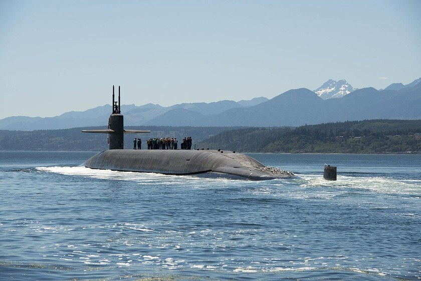

News and Articles
- The Submarine Tradition The bond of trust, mutual respect, and personal responsibility shared by everyone who has served in submarines.
- Why Submariners’ Advocacy Group? Who SAG is, why there is no membership application, and the partnerships SAG is building for Submariners.
-

Submarine Toxic, Hazardous, and Radiation Exposures How submarine atmospheres are generated and monitored, and the contaminants SAG is focused on. - The Unseen Burden: Toxic Exposures and Health Impacts SAG’s landmark report on toxic exposures and health impacts on U.S. Navy Submariners, with the presentation and documents.
- The Unseen Burden, Amendment 1: Physiological Effects Critical analysis of the physiological impact of toxic exposures on U.S. Navy Submariners.
- The Unseen Burden, Amendment 2: Compounded Stressors How compounded stressors interact with toxic, hazardous, and radiation exposures aboard submarines.